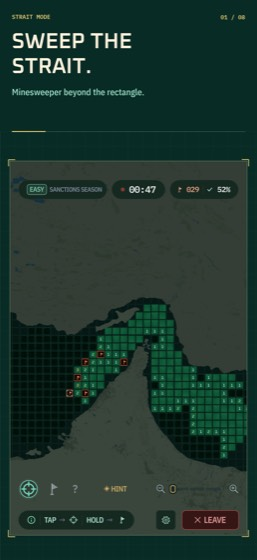
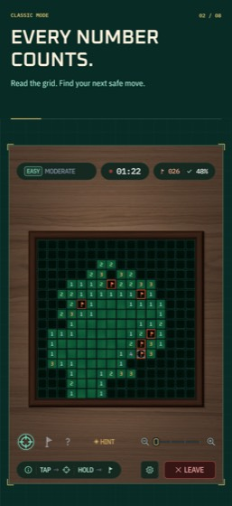
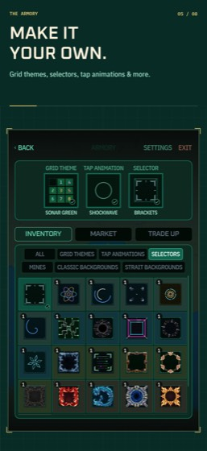

Strait mode · Small Hands, Small Grid · Free in your browser
Minesweeper: Strait of Hormuz
Minesweeper beyond the rectangle. Boards shaped by the channels, coves and islands of the Strait of Hormuz. Play the smallest strait board right here, no download.
Play Small Hands, Small Grid
The real game, running in your browser. 115 tiles, 12 mines, first tap always safe. Tap to reveal, hold to flag.
Loads about 35 MB the first time. Works on phones and desktops.That's the smallest grid. The full game has four strait boards, classic rectangles at four sizes, a 44-puzzle route, the Daily Sweep and Weekly Operation, ranks, stats, and a board you can dress up. Plays offline.
What's in the full game
Every number is a clue.
Every flag is a promise.
Four ways to sweep, all with the same rules. The shape of the water changes how the logic flows.



Rules
How to play minesweeper on the strait
Minesweeper: Strait of Hormuz uses the classic rules. Every revealed number tells you how many mines touch that tile, counting diagonals. Use the numbers to work out which hidden tiles are safe and which are mines, flag the mines, and reveal every safe tile to clear the board.
Controls
- Tap a hidden tile to reveal it. The first tap is always safe.
- Hold a tile, or right-click on desktop, to plant a flag.
- Tap a revealed number once its flags add up to clear the tiles around it in one go.
- Pinch or use the zoom slider to move around larger boards.
House rule: flags mean certainty, not guesses
A flag asserts "this is a mine." The counter trusts you, so every wrong flag is a logic error, never bad luck. If you are not sure, leave the tile alone and work another part of the board.
Why the strait changes things
On a rectangle every tile has up to eight neighbours. On the strait, coves and islands cut the board into channels, so some tiles have three or four neighbours and the numbers carry more information. Narrow passages become the places where the logic gets decided.
Questions
FAQ
Is Minesweeper: Strait of Hormuz free?
Yes. The browser board on this page is free, and the full game is a free download on iOS and Android. The mobile game shows ads between matches, with a one-time Remove Ads purchase and optional cosmetics.
What makes it different from classic minesweeper?
Strait mode plays on irregular boards shaped by the real coastline of the Strait of Hormuz. The rules are the same, but the shape of the water changes how the logic flows. Classic rectangular boards are included too.
Can I play on PC?
The Small Hands, Small Grid board runs in any modern desktop or mobile browser on this page. The full game with all boards, puzzles and challenges is on the App Store and Google Play.
Does my browser progress carry over to the app?
No. The browser board keeps its own small save in your browser. Times, ranks and rewards live in the full game.